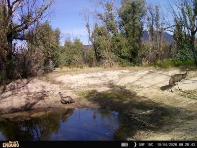
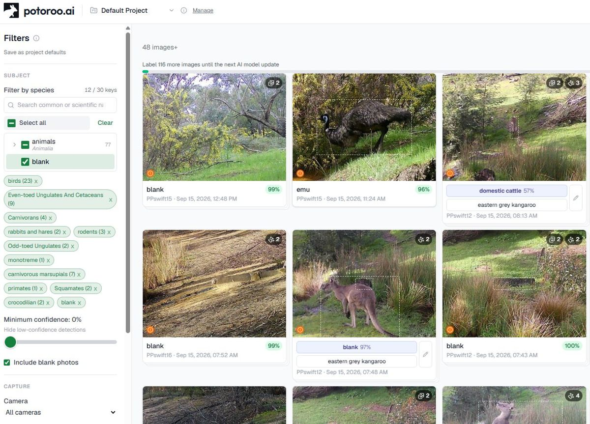
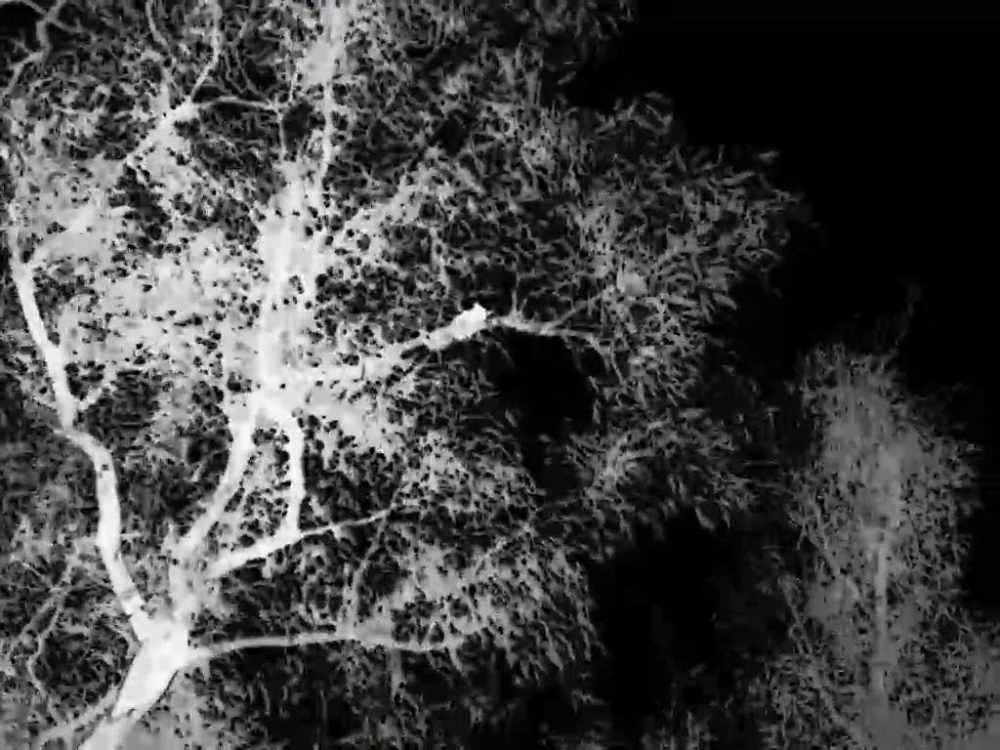
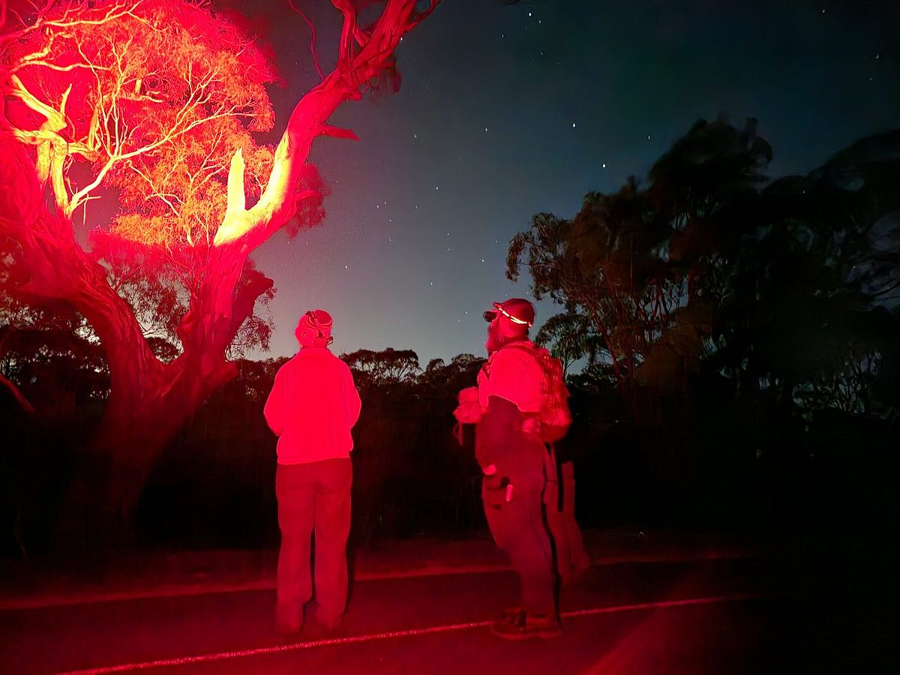

3.9
Surveying nocturnal animals
Trail cameras
A 4G camera with a solar panel runs around $450–750 and sends photos to your phone; a data-only SIM costs about $95 a year. Night vision reaches roughly 15 metres. Expect thousands of images — AI sorting software does the first pass and you check what it flags.
Protocol — camera placement
- Direction
- Don’t point north. Sun in the lens makes images backlit, and a backlit animal defeats you and the AI alike. Check where the sun will be in other seasons, not just today.
- Position
- Tracks, clearings and natural funnels — gaps in a fence line, a gate, a creek crossing.
- Framing
- Set it so you can tell which way the animal was heading. An animal crossing the frame with no context tells you much less than one moving along a track.
- Reference
- Anchor the shot on something fixed, so you can judge size and compare images over time.
- Record
- Camera ID, location, the date you set it and the date you collected it.


Thermal scopes and night walks
A thermal scope picks up body heat, so it finds animals a spotlight would miss. They are expensive, around $3,500–4,000, which makes them a good thing for a Landcare group to own rather than an individual.
Protocol — night survey walk
- Timing
- Start at dusk. Allow about an hour.
- Route
- A set route you can repeat, walked out and back the same way.
- Method
- Scan with the thermal, then confirm with a red-light torch — red disturbs animals far less than white.
- Record
- Species, number, and what it was doing. Note pest species as well as natives; both matter.
- Safety
- Spread out, warn each other about trip hazards and overhead branches, and check the route in daylight first.
Needed
The nocturnal survey method as actually run — transect length, timing relative to dusk, group size, what gets recorded. And Connor’s fuller trail-camera protocol if one exists beyond these rules of thumb.

